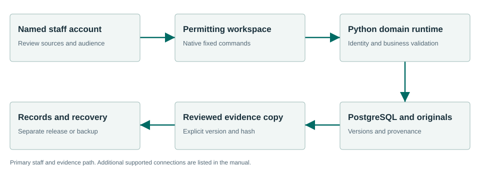

Prepare a complete, cited intake for staff review.
Permitting supports pre-application and development-review intake. It imports retained requirements, produces source-grounded material/pathway guidance, saves reviewed cases and prepares a separate Records copy.
What the workflow delivers
- Import requirements. Open Requirement library and select the complete JSON RequirementBundle. Inspect jurisdiction, project type, effective/source dates, original filename/hash and material citations. Later revisions require the current revision and preserve history.
- Read pathway guidance. Choose the retained requirement revision and matching project type. Inspect material requirements, pathway steps and source-backed timing/fee text. If authority is absent, seek the source; do not invent a requirement, date or fee.
- Prepare intake. Create the case with project, location, applicant contact and staff assignment. Assess materials as not reviewed, provided, missing or unclear. Keep private notes and the proposal separate from the public summary.
- Select cited context. Search Code and Zoning and choose the exact permitted versions. Source availability and expected hashes are checked during search, save and export.
Connected evidence
Consumes Code and Zoning evidence and hands a reviewed Records copy to an existing request. There is no automatic creation of an Inspections case.
Know the beta boundary
Does not issue permits, collect money, calculate authoritative permit fees, schedule inspections or write decisions to a commercial permit system. Imported official fee amounts or fee-source wording are information from their source, not a new authoritative calculation. Universal vendor status mirroring and an internet applicant portal are outside this beta scope.
Where the evidence goes

Consumes Code and Zoning evidence and hands a reviewed Records copy to an existing request. There is no automatic creation of an Inspections case.
Selected staff workflows passed.
The signed private candidate passed normal first-run and selected synthetic workflows in a fresh Windows Sandbox profile. This is not a claim that every screen, vendor, upgrade or city equipment configuration has been certified.
Read the exact acceptance and limits →Ready to evaluate?
Begin with the manual and the signed candidate linked above. Configure the chosen test site and have its staff review source applicability and run the existing workflows.